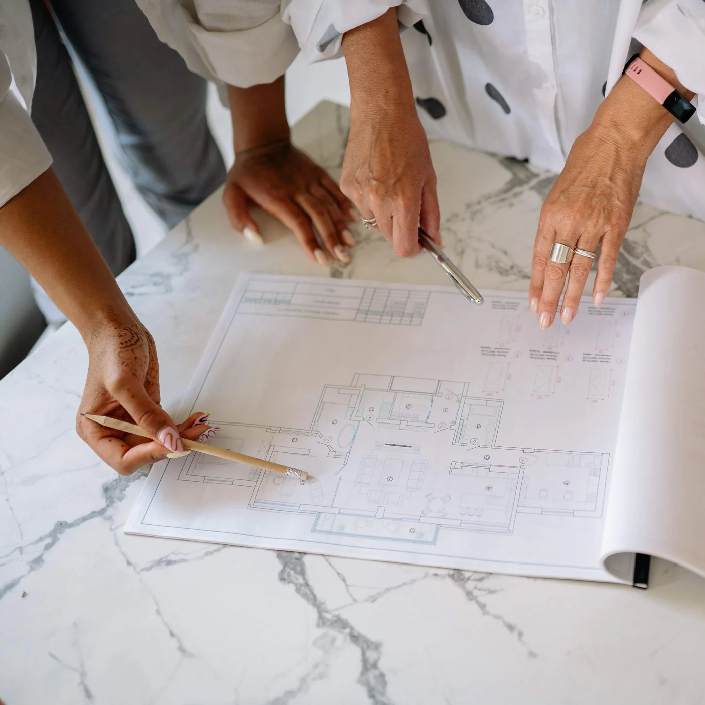
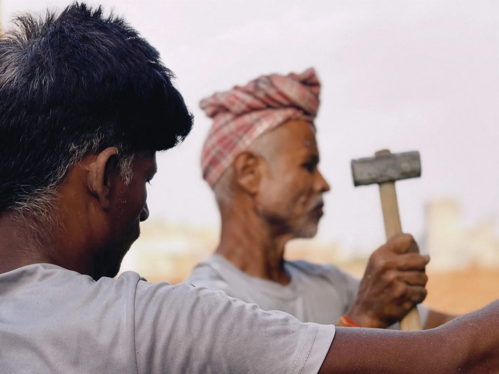
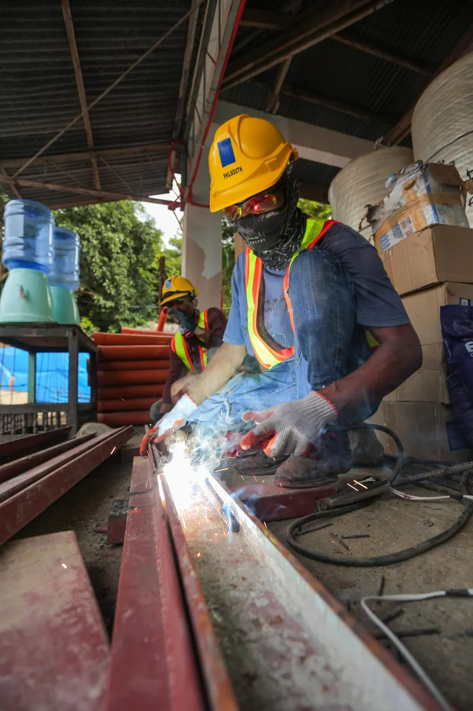
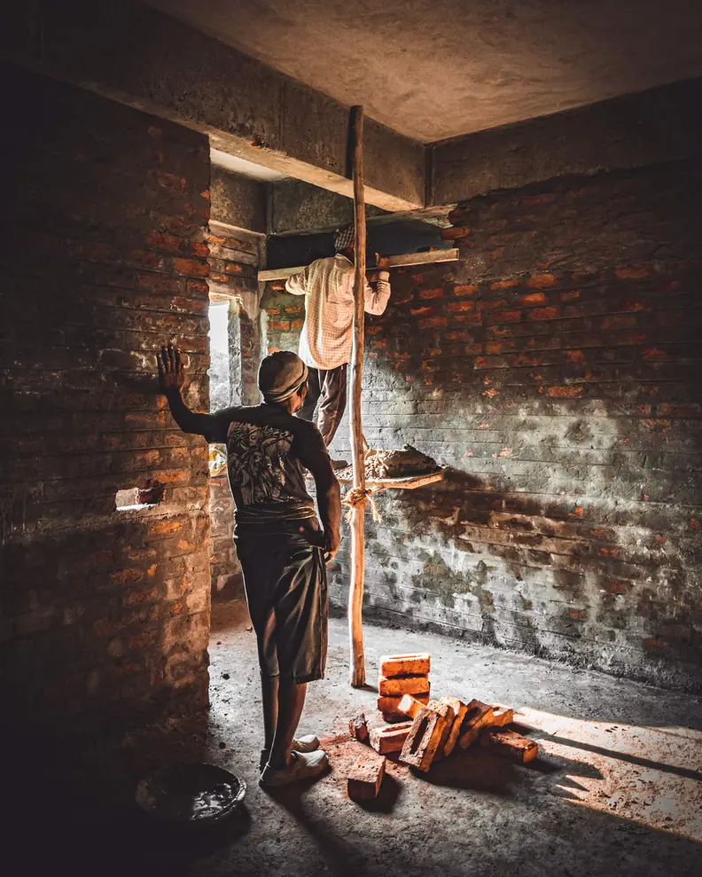

Laying the foundation0%

Client-flow breakdowns, milestone fixes and follow-up guidance written by the site engineers who actually run developers with us every week.




Project PlanningAdding consultation slots every week isn't a strategy — it's how a calm developer turns into a crowded conference room. Here's what actually keeps clients moving, week after week.
Read the article Milestones
MilestonesNine times out of ten it isn't your clients — it's your milestone timing. A site engineer's breakdown of the usual suspects and the fixes that work.
Read the article Client Retention
Client RetentionSkipping your project-score review doesn't save time. It makes your next follow-up riskier. Here's how we actually schedule them.
Read the article Reports & Analytics
Reports & AnalyticsMost weekly targets fall apart on a busy Monday. Here's the version our developers actually stick to for a full year.
Read the articleConsultation Site visitsA look inside the project-cycle process every Stackly site engineer uses, from first registration to the final review.
Read the articleMilestonesYour software isn't the problem. Your record discipline is. A simple fix that keeps client records accurate without adding headcount.
Read the articleClient RetentionWe pulled the numbers from 200 client check-ins. Scheduled project-score reviews predicted follow-up site progress better than anything else we track.
Read the article Consultation Site visits
Consultation Site visitsTimestamp, client and a clear next step, every project, not a judgment call. Here's how we grade it and why it projects.
Read the article
Reports & AnalyticsUnder-booking is the most common reason an developer's growth stalls. Signs you're leaving consultation slots empty.
Read the articleLonger reads on what changes when an developer stops guessing and starts following its own numbers.
Client ServicesStaggered slots, one confirmation call the evening before and a shared dashboard for the intake desk. Here is the exact weekly routine, step by step, and what the site engineer changed first.
Read the story Construction Operations
Construction OperationsSite progress, follow-up rate and average wait explained in plain language, plus the three reports every developer lead should open before Monday morning rounds.
Read the storyEverything here is written for any developer. A managed client or developer gets the same reasoning applied to their exact numbers, their exact projects, their exact week.
The most bookmarked post on the blog — why adding site consultations blindly isn't a strategy.
Why slots, milestones and follow-ups must be planned together.
Our most-shared construction-ops post — the milestone-timing mistake behind most missed deadlines.
Send milestones 24 hours and 2 hours before the site visit, not once.
Data from 200 client check-ins — the retention post that changes routines.
Clients with a weekly check-in return for follow-ups far more often.
The planning post we send to every developer stuck on a growth plateau.
A simple buffer rule that keeps payment filing-season Mondays under control.
Our authors work with live developers every week, so the advice on this blog comes from the projects, calls and dashboards they manage.
Writes about capacity planning, service-area design and cost per client.
Writes about staff construction, milestone design and client flow.
Writes about data hygiene, client privacy and compliance.
Writes about registration flow, project logging and adoption tracking.
We publish one or two posts a week. Each one is reviewed by a site engineer who has handled the situation it describes.
Yes. Send your question through the contact page or reply to the weekly newsletter. Topics that come up across several developers usually become a post.
Blog posts are general. If you are a managed developer, your site engineer applies the same ideas to your own stages, volumes and consultation targets.
You can share links freely. If you want to republish a post in your own newsletter or intranet, contact us first and we will confirm the details.